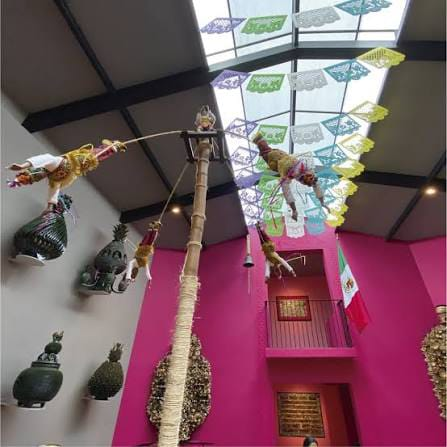

Conoce las Rutas Ecoturísticas
Museo de arte popular

La Laguna Negra es un espacio natural que destaca por su paisaje, tranquilidad y entorno boscoso. Es uno de los elementos naturales relacionados con las actividades ecoturísticas de la zona.
Este lugar es atractivo para quienes disfrutan de la naturaleza y de los paisajes naturales.
Arte popular

Existen algunas rutas ecoturísticas, como el camino Avándaro - Pinal del Marquesado, y un mirador desde el cual se alcanza a apreciar el área de Valle de Bravo y la comunidad de Colorines.
Por esta razón, suele asociarse de manera informal a la región turística de Valle de Bravo.
Obras

El Camino a Pinal del Marquesado (también conocido como la ruta Avándaro - Pinal del Marquesado) es una de las vías ecoturísticas y de aventura más famosas de la región.
Conecta la zona boscosa de Avándaro con la comunidad de Pinal.